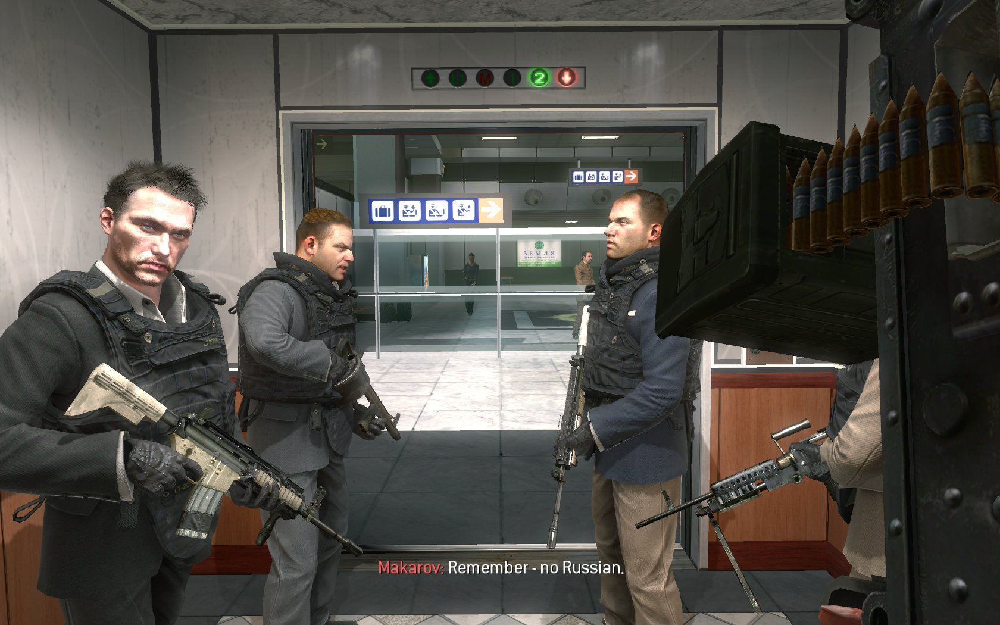

Call of Duty: Controversy
Unless you've been living under a rock for the past decade, you probably know that Call of Duty has been at the center of media attention on more than one occasion.
Perhaps the biggest controversy took place when journalists became outraged at the inclusion of "No Russian", a mission in which the player takes part in a mass shooting at an airport.

Detractors also claim that Call of Duty and violent games like it lead to actual mass shootings and such in real life.
The fact of the matter is that there is simply no concrete data to back this up. In fact, it is actually the opposite.
Feel free to do some further reading on this.
External Links